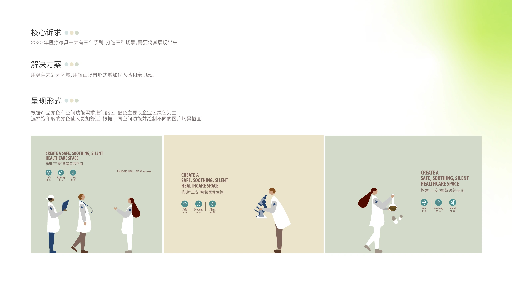
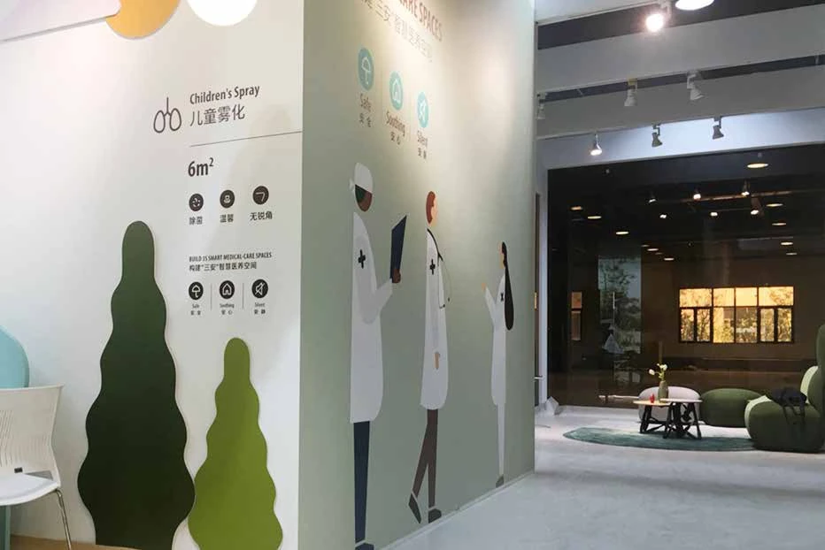
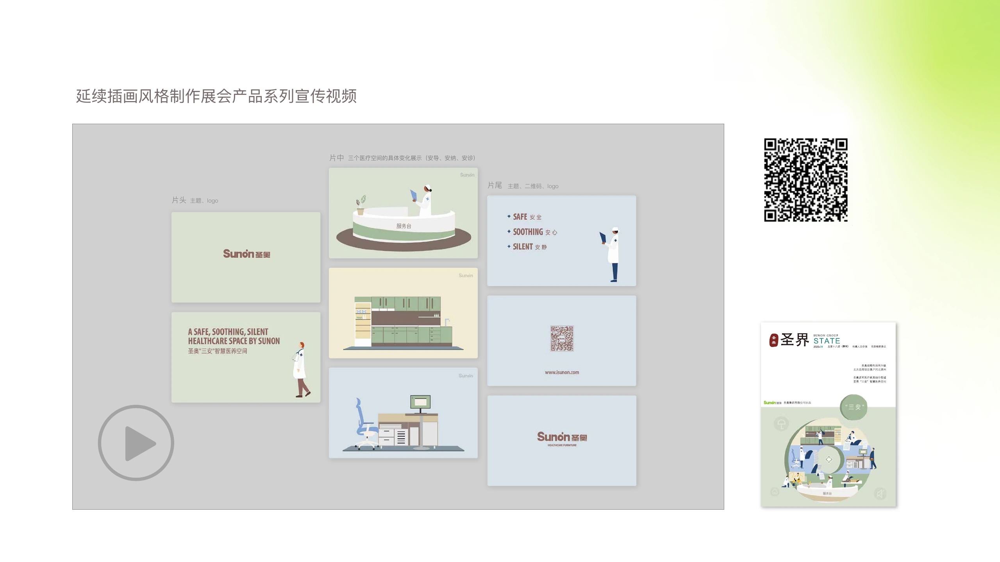

SUNON · 2020
医疗家具展会
场景插画与产品动画
我的职责：场景插画 · 展会视觉 · 动画脚本与供应商协作
EXHIBITION · 2020
把医疗产品体系，
转化为清晰的场景表达。
圣奥医疗家具首次亮相深圳医疗展会。我围绕不同医疗空间绘制场景插画，应用于展会平面展示，并延展为产品系列宣传动画，让现场展示与后续传播保持一致。

落地成果
从展会现场，延展到产品动画与品牌传播。
插画应用于现场展示，并延续到产品动画及内部宣传杂志封面。动画在展会播放后，也用于公众号与微博宣传。
我负责：场景插画、展会平面视觉、动画脚本与平面素材，以及动画供应商沟通。

医疗家具系列宣传动画
成片 · 33 秒产品动画画面与传播应用
